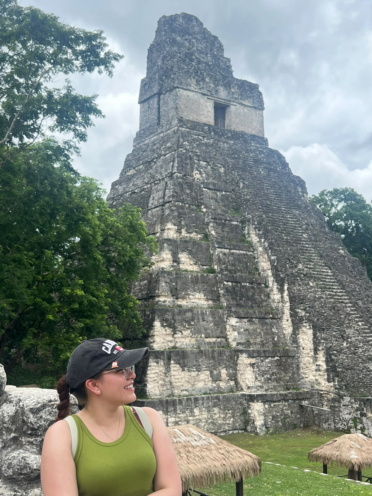
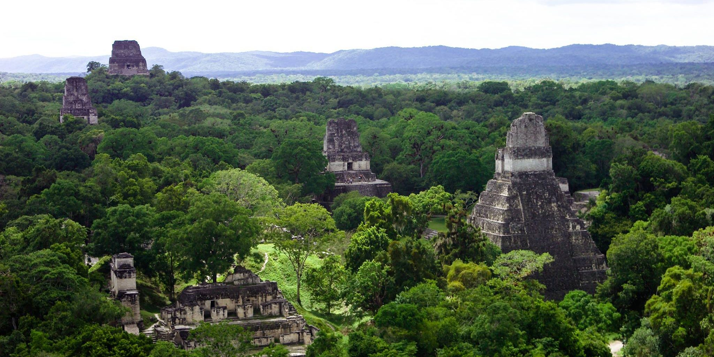
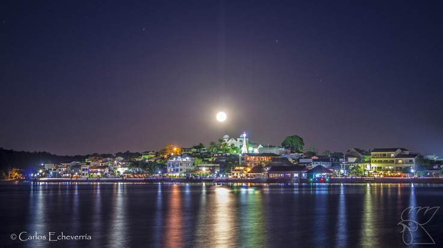
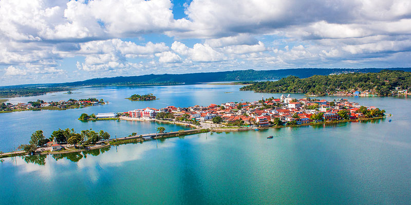

Descripción del lugar
Tikal es uno de los sitios arqueológicos más importantes de la civilización maya, ubicado en el departamento de Petén, al norte de Guatemala, dentro del Parque Nacional Tikal, declarado Patrimonio Mundial Mixto (cultural y natural) por la UNESCO. Sus imponentes templos y pirámides se alzan sobre la selva tropical, rodeados de una biodiversidad excepcional que incluye monos araña, tucanes y jaguares.
A poca distancia se encuentra Flores, una pintoresca isla ubicada en el Lago Petén Itzá, conocida por sus calles empedradas, casas coloridas y ambiente tranquilo. Flores es el punto de partida habitual para las excursiones hacia Tikal y otros sitios arqueológicos de la región.
Ubicación: Departamento de Petén, Guatemala.
Principales atractivos: Templos mayas, biodiversidad de la
selva petenera, el Lago Petén Itzá y el casco histórico de la isla de Flores.
Galería de imágenes
Haz clic sobre una imagen para verla en grande.




Itinerario de la excursión
| Fecha | Horario | Actividad | Lugar |
|---|---|---|---|
| Día 1 - 15/08/2026 | 06:00 am | Salida desde la Ciudad de Guatemala | Terminal de buses, Ciudad de Guatemala |
| Día 1 - 15/08/2026 | 02:00 pm | Llegada y registro en el hotel | Isla de Flores, Petén |
| Día 1 - 15/08/2026 | 04:00 pm | Recorrido a pie por el casco histórico | Isla de Flores |
| Día 2 - 16/08/2026 | 04:30 am | Traslado hacia el parque nacional | Flores → Tikal |
| Día 2 - 16/08/2026 | 06:00 am | Tour guiado por los templos mayas al amanecer | Parque Nacional Tikal |
| Día 2 - 16/08/2026 | 12:00 pm | Almuerzo típico | Restaurante del parque, Tikal |
| Día 2 - 16/08/2026 | 03:00 pm | Regreso a Flores y tarde libre | Isla de Flores |
| Día 3 - 17/08/2026 | 08:00 am | Paseo en lancha por el Lago Petén Itzá | Lago Petén Itzá |
| Día 3 - 17/08/2026 | 11:00 am | Salida de regreso a la Ciudad de Guatemala | Isla de Flores → Ciudad de Guatemala |
Actividades disponibles
Además de las actividades incluidas en el itinerario, los visitantes pueden disfrutar de:
- Observación de aves y fauna silvestre en la selva petenera
- Recorrido nocturno guiado en Tikal (sujeto a disponibilidad)
- Kayak en el Lago Petén Itzá
- Visita a la Reserva Natural Petencito
- Compra de artesanías locales en la isla de Flores
- Degustación de gastronomía típica petenera
- Ascenso al Templo IV para ver el atardecer sobre la selva
No se encontraron actividades con ese término.
Cotizar excursión
Completa los datos para calcular un estimado del costo de tu viaje.
Reservar / Contacto
Déjanos tus datos y te contactaremos para confirmar tu reservación.